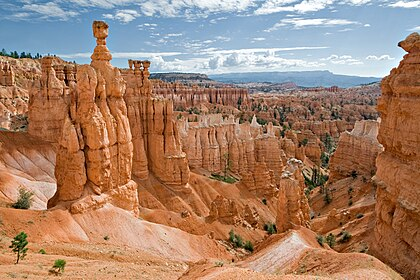

Еверест
Найвища вершина земної кулі, розташована в Гімалаях на кордоні Китаю і Непалу. Її висота становить 8848,86 метра над рівнем моря.

Брайс
Національний парк, розташований на південному заході штату Юта в США. У межах парку знаходиться каньйон Брайс, завдяки якому парк і отримав назву, дарма що насправді це не каньйон, а гігантський природний амфітеатр, створений ерозією східної сторони плато Пансугант.

Тростян
Гірська вершина в масиві Сколівських Бескидів (Українські Карпати), в межах Сколівського району Львівської області, на захід від селища Славсько.